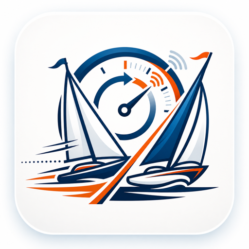

Compte à rebours clair
Suivez le temps restant avant le départ avec une interface pensée pour être lisible rapidement en situation de régate.

RegataRacerChronomètre de départ de régate
Une application simple et lisible pour suivre les séquences de départ sur l’eau, garder l’écran actif et rester concentré sur la ligne.
RegataRacer va droit au but: un compte à rebours visible, des repères de séquence faciles à suivre et aucune collecte de données personnelles.
Suivez le temps restant avant le départ avec une interface pensée pour être lisible rapidement en situation de régate.
Gardez les signaux importants à portée de vue pour anticiper chaque étape avant la ligne de départ.
L’application peut garder l’écran allumé pendant le compte à rebours afin d’éviter une mise en veille au mauvais moment.
Prochaine étape: signal préparatoire
Préparez la séquence avant de quitter le quai, puis lancez le compte à rebours lorsque le comité donne le signal.
Lancez l’application avant le départ et placez le téléphone à un endroit visible et stable dans le bateau.
Sélectionnez la séquence de départ souhaitée, par exemple 5 minutes, puis confirmez que le temps affiché correspond à la procédure de course.
Appuyez sur démarrer au signal du comité. Gardez l’écran visible; RegataRacer peut empêcher la mise en veille pendant le compte à rebours.
Utilisez les indications de temps restant pour gérer les manoeuvres, la position sur la ligne et l’approche finale.